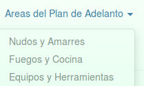

Información Importante
Navegador optimo
Para el mejor funcionamiento de este manual sujerimos utilizar los navegadores Google Chrome y/o Firefox, ya que muestran la información de manera más manejable. Es recomendable que también sea el navergador por defecto de tu equipo (cualquier de los dos).

Menú principal
Al lado izquierdo notarás el menú principal del manual, allí puedes seleccionar el área de tu interés. Solo debes pulsar con el puntero del ratón (mouse) y listo.
Vistas, impresiones y copias
La mayoría de la información del presente manual está en forma de archivos PDF, los cuales serán visualizados sin ninguna dificultad en el área correspondiente.
Los navegadores mencionados tiene un manejo muy sencillo de los archivos PDF, que permire descargar, imprimir y visualizar el archivo según más convenga.
Para el resto de la información mostrada en el manual, puedes usar las opciones de copiar y pegar, como en cualquier página web